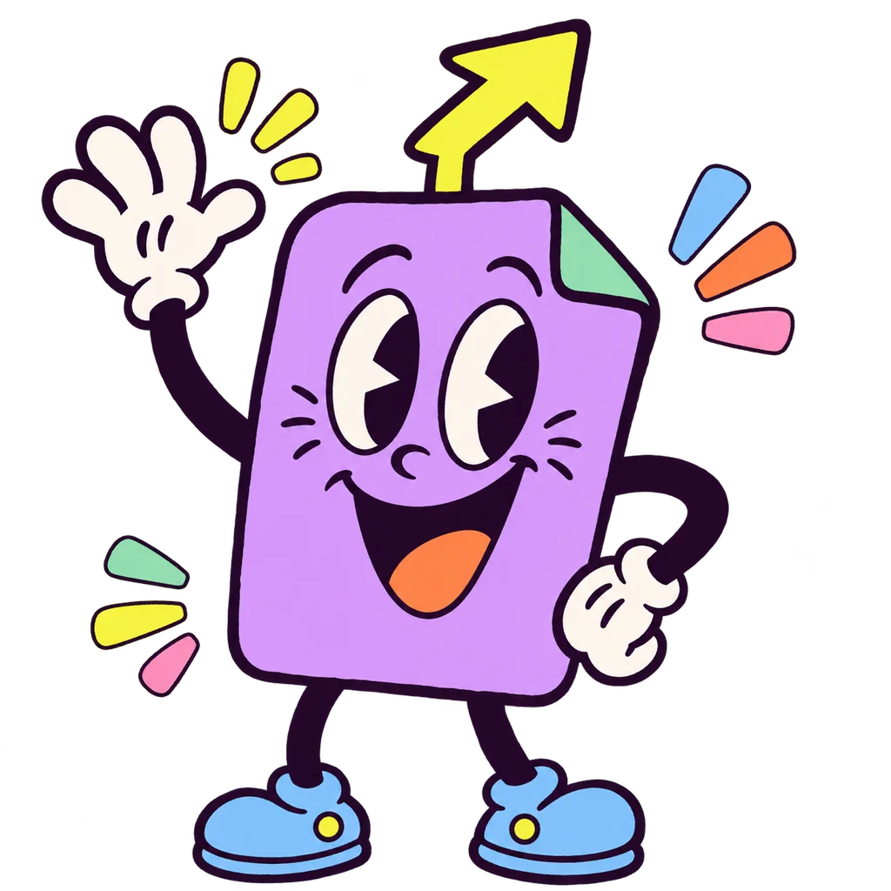

Agent · Social post
Launch post for Guji Natural
Agent · Team update
Web sales jumped by a third
Agent · Email reply · needs you
Reply to Lena at Bloom Café
Approve & send


A feed of work your agents already did. Approve, edit, dismiss, or dive in.